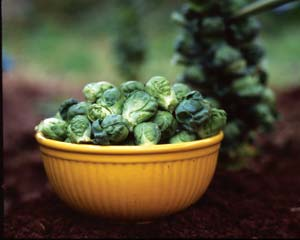
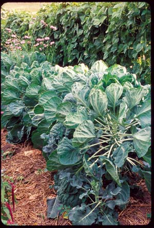
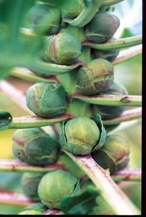
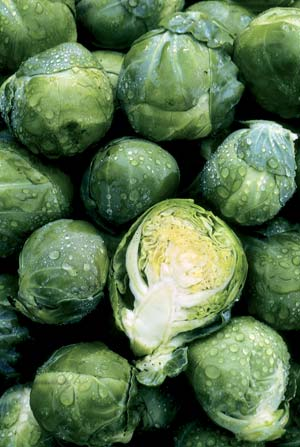
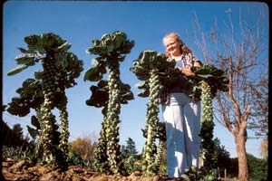
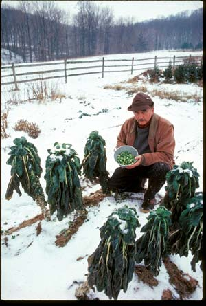

Brussels Sprouts: Love 'Em, Don't Leave 'Em
If you grow and cook them correctly, you may discover a surprising attraction to these nutty and delicioustiny cabbages.
By Roger Doiron
February/March 2008
You can learn a lot about a country based on how its people talk about food and love. In Belgium, for example, it’s not uncommon to refer to a loved one as “mon petit chou,” which translates as “my little cabbage” or “my Brussels sprout.” This may come as a shock to those of you who have never uttered the words “love” and “Brussels sprouts” in the same breath.
Brussels sprouts are one of those “love ’em or leave ’em” vegetables that elicit strong opinions. I considered myself among the “leave ’ems” until I moved to Belgium in the 1990s. It was there that I discovered both Brussels sprouts and love. I was dating a young Belgian woman who would later become my wife. We often spent weekends in the countryside with her family. As a gardenless city dweller, I was happy to get out in the country and scratch at the ground, even if it wasn’t my own ground. And as a somewhat homesick expatriate, I felt comforted by Mom’s cooking, even if she wasn’t my mom. It was Ginette, now affectionately known as “Mami” to my three Belgo-American sons, who introduced me to Brussels sprouts cultivation and cookery.
Sweet, Nutty and Yummy
A star of the fall and winter garden, cold-hardy Brussels sprouts can be enjoyed all winter long; the colder the weather, the better they taste. The trick to cooking them is not overcooking them. Most people who say they don’t like Brussels sprouts have eaten industrially grown, bitter versions with all the flavor and color cooked out of them. A properly cooked sprout should be fork-tender but not mushy, and should retain most of its green color.
A classic Belgian way of preparing them is steamed eight to 10 minutes and then lightly sautéed in butter with some chopped shallots or onions. Add some salt and pepper, and if you’re feeling extravagant, a drizzle of cream. That simple recipe was what converted me from a Brussels sprouts leaver into a lover 10 years ago. Since then, I’ve discovered other ways of preparing them that have reinforced the love. Roasting them, for example, brings out their sweetness and a pleasant nutty flavor. (See recipe below.) They can also be added to stir-fries.
Timing is Everything
You don’t need to move to Brussels or have a Belgian mother-in-law to enjoy great homegrown Brussels sprouts, although it helps to have something approximating Belgium’s cool, moist growing season. Brussels sprouts love cool weather, and in many regions can easily be picked fresh for winter holidays. Most of the Brussels sprouts grown commercially in the United States originate from northern California’s fog belt and other misty, ocean-cooled areas such as Long Island, N.Y. I grow mine with good results on the southern coast of Maine (Zone 6). But don’t worry if you don’t have the optimal conditions. As long as your climate allows you to grow broccoli or cabbage, you can grow satisfying Brussels sprouts.
Members of the cabbage family are not terribly fussy when it comes to soil types. Average garden soil with a pH from 6.0 to 6.8 will work fine. Brussels sprouts thrive in a moist environment. If Mother Nature can’t provide those conditions for you in the form of mist, drizzle and fog, then you can help ensure that your sprouts are getting a regular and even supply of moisture through their roots. Start by working a generous amount of water-trapping compost into your soil before planting your seeds or setting out transplants.
If there is one tricky thing about growing Brussels sprouts, it’s knowing when to plant them in your area. They are a long-season vegetable requiring at least 90 days to mature. For gardeners with a fairly short growing season like mine, there’s little guesswork involved: You plant roughly three months before the first fall frost.
Gardeners in warm, long-season climates need to be more careful so as not to expose their sprouts to too much heat at the beginning or end of the plant’s life cycle. Most guidebooks recommend that Southern planters direct sow from mid-October to late December for a spring harvest, but it’s always a good idea to check with local extension agents in your area to confirm the best time.
Given the long season required by Brussels sprouts, Northern gardeners will have best results starting with transplants, set out in early summer. Seeds can be started indoors or in a cold frame roughly a month before the last spring frost.
While there are many different varieties available, most fall into two categories: “dwarf” and “tall.” Northern gardeners have more luck with dwarf varieties that mature in less than 100 days, such as the purple variety ‘Falstaff,’ while gardeners with longer growing seasons may wish to try the taller varieties that take longer to mature, such as ‘Rowena,’ which may not be ready to harvest for up to 195 days.
Like broccoli, Brussels sprouts should be planted 18 to 24 inches apart. They will benefit from a generous layer of mulch which will help keep the roots comfortably moist and cool during the dog days of summer. I’ve found that mine do not require any supplemental fertilizing during the growing season, but you may wish to treat yours to a gulp or two of liquid fish emulsion or another organic soil booster.
Get Ready to Harvest
After about 50 days, you will notice small round sprouts emerging where each leaf joins the stalk, first at the bottom of the plant’s “trunk” and moving upwards over time. You can begin harvesting them as soon as the sprouts reach the size of a marble, but the most flavorful harvests are left for later in the season after the first frost has come and infused your sprouts with a natural sweetness that most commercially grown versions will never know.
If you want to speed up or increase the size of your sprouts, you can “top off” your plant roughly a month before you expect your first hard freeze. To do this, use a sharp knife or scissors to remove the growing peak of the plant. This helps channel all the plant’s energy into maturing the remaining sprouts.
Although Brussels sprouts don’t grow much after the first freeze, they tolerate frosts well, so don’t worry when the thermometer dips into the low 20s. Some of sweetest sprouts I’ve ever eaten were harvested in the snow. Yet, all good things must come to an end, including the Brussels sprouts season. Once temperatures start to plummet below 20, you’ll want to bring whatever sprouts you have left inside, stalk and all. To do this, cut the stalk at its base with a hand saw, strip the leaves, and store it in a cool, dark area; the attached sprouts should hold up well for several weeks. Fresh, unwashed sprouts will keep in the refrigerator for about a week, and longer if you keep them on the stalk.
Brussels sprouts deliver in home gardens long after all the other vegetables have given up. So, why not give them a first try or a second look this growing season? With time and practice, you may soon be calling someone who is near and dear to you “mon petit chou.”
Oven Roasted Brussels Sprouts with Bacon
1 pound Brussels sprouts, trimmed and halved
3 tbsp extra virgin olive oil
Juice of one lemon
5 strips bacon, cooked to crispy and crumbled
1 tsp lemon zest
Salt and pepper, to taste
Preheat oven to 400 degrees F. Place Brussels sprouts in a large bowl and toss with olive oil and lemon juice. Arrange sprouts in a single layer on a baking sheet and bake for 25 minutes (turning once or twice), or until tender and golden brown. Return Brussels sprouts to bowl, stir in bacon, lemon zest and additional lemon juice if desired. Salt and pepper to taste. Serves 4 to 5.
The Ick Factor: A Scientific Explanation
If you’re a member of the “leave ’em, can’t love ’em” crowd who detests Brussels sprouts, there may be a scientific explanation for your aversion to the cabbage family’s smallest member. A study published in 2006 in Current Biology concludes that some people’s palates may be genetically wired to react more strongly to the bitter compounds known as glucosinolates found in cruciferous vegetables such as broccoli, Brussels sprouts, radishes and turnips. But don’t assume you’re in this camp until you’ve tried properly prepared Brussels sprouts!
Roger Doiron is a Kellogg Food and Society Policy Fellow and founder of Kitchen Gardeners International, a nonprofit network of gardeners from around the world whose goal is to achieve greater food self-reliance through the promotion of kitchen gardening, home cooking and sustainable local food systems.
|
 WALTER CHANDOHA Homegrown Brussels sprouts are sweeter and nuttier than their industrially grown counterparts. |
 ROGER DOIRON If you think you hate Brussels sprouts, try this delicious recipe for Oven Roasted Brussels Sprouts With Bacon. |
 JERRY PAVIA The best thing about growing your own Brussels sprouts is that they are so cold-hardy you can enjoy them well into the winter, even at holiday meals. |
|
 LYNN KARLIN You can begin harvesting your homegrown Brussels sprouts as soon as they are marble-sized, but the most flavorful harvests are left for later in the season after the first frost has come and infused your sprouts with a natural sweetness that most commercially grown versions will never know. |
 DWIGHT KUHN The trick to cooking Brussels sprouts is not overcooking them. A properly cooked sprout should be fork-tender but not mushy, and should retain most of its green color. |
 DAVID CAVAGNARO Choose slow-growing tall varieties of Brussels sprouts in warm areas. |
|
 WALTER CHANDOHA In wintery climates, choose dwarf varieties of Brussels sprouts that take a long time to mature. |
TABITHA ALTERMAN A 2006 study in Current Biology found that some people may be genetically predisposed to hate Brussels sprouts and other cruciferous vegetables. But don’t count yourself among them until you’ve tried properly grown and prepared Brussels sprouts! |
|